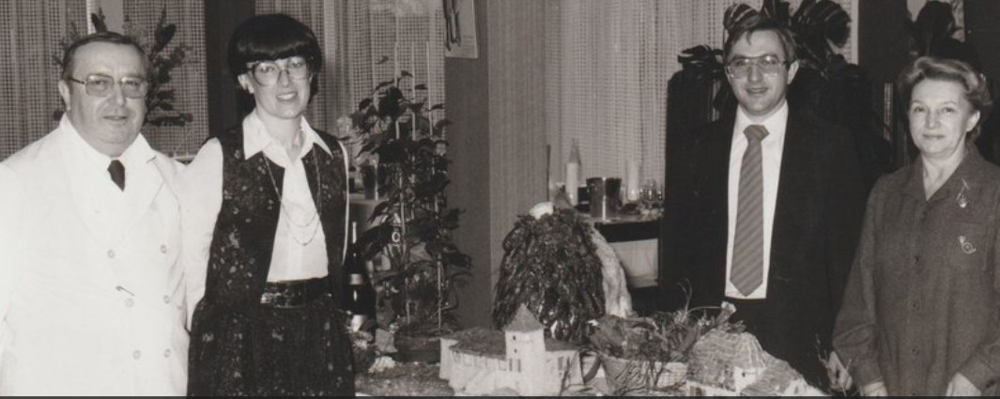
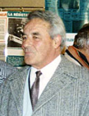

![Mémorial du camp de Dachau, visuel du projet]() Les camps de concentration
Les camps de concentration Antoine Redondo
Déporté du Train fantôme
Bonjour, je suis Mémo, votre assistant de recherche.
Ouvrir Mémo en plein écran ↗Application réalisée et offerte par les élèves des classes de défense et de sécurité globale du collège Jean Giono d’Orange.
Les six premières tuiles sont des illustrations générées par IA.Retrouvez chaque témoin et les pages de son témoignage écrit. Ouvrez « Lire le témoignage papier » pour consulter les documents numérisés directement sur cette page. Les photographies sont présentées lorsqu’elles sont identifiées.
Témoignages des personnes passées par le convoi et récits de leurs proches. Certaines femmes ont ensuite été transférées à Ravensbrück.
Déporté du Train fantôme
Évadé du Train fantôme
Déportée du Train fantôme, puis transférée à Ravensbrück
Déportée du Train fantôme, puis transférée à Ravensbrück
« Mon récit de la déportation » : texte écrit après la libération à la demande de sa mère.

Récit familial de la rafle de Figeac · Jeanne et Odette Tillet furent déportées par le Train fantôme
Récits des habitants, cheminots et personnes qui ont porté secours, de Rémoulins à Sorgues.

Témoignage de 1987 · Rémoulins
 Agrandir ce document ↗
Agrandir ce document ↗ Agrandir ce document ↗
Agrandir ce document ↗Présentation de Marie Damiani et documents de la Croix-Rouge →

Cheminot de Sorgues

Cheminot de Sorgues
Habitant de Sorgues
Témoin de Sorgues
Témoignages de femmes déportées à Ravensbrück par d’autres transports.
")
Résistance et déportation
Résistance et déportation
Autres parcours de déportation et documents de contexte sur Sorgues.
Déporté · document commun avec Albert Benoit
Déporté · document commun avec Gaston Despoux
Document sur l’usine près de la gare de Sorgues
Documents réunis par les élèves du collège Jean Giono d’Orange. Les liens d’agrandissement ouvrent uniquement le document choisi. Les numérisations hébergées sur Google Drive nécessitent que leur partage reste accessible.
Retrouvez les films et la bande-son du projet. Pour la marche, choisissez l’écoute audio.
Les médias s’ouvrent en lecture seule dans Google Drive.
Choisissez les 64 femmes du Train fantôme ou les portraits d’autres femmes engagées, puis touchez une fiche pour découvrir son parcours et ses documents.
Pour identifier une personne, croisez son nom de naissance ou d’épouse, sa date de naissance et, si disponible, son matricule.
Femmes résistantes liées à la Provence-Alpes-Côte d’Azur ou aux territoires voisins du parcours du Train fantôme, notamment le Gard (Occitanie). Chaque fiche précise la commune et la nature du lien local ; elle ne présume pas que toute l’action résistante s’y est déroulée.
Recherchez parmi les 660 fiches nominatives issues du travail documentaire des élèves. Les matricules, itinéraires et observations sont repris des sources du projet. Les photographies et les archives complémentaires ne sont affichées comme attribuées à une personne que lorsque leur identification est suffisamment étayée.
Ces fonds permettent de prolonger la recherche sur un nom, une date de naissance ou un matricule. Un résultat de recherche ne prouve pas, à lui seul, qu’il s’agit de la bonne personne : comparer les informations avant toute attribution.
Cartes, documents et films réunis dans le projet pour comprendre les différents camps et le système concentrationnaire.
Ces films d’archives peuvent contenir des images difficiles.
Consultez la copie de la liste des personnes passées par Dachau ou poursuivez vos recherches dans les archives Arolsen.
Noms et matricules du fichier de Ravensbrück.
Rechercher dans la liste des personnes passées par le camp.
Document en cours de préparation.
Consulter le service de recherche dans les archives.
Accéder à la recherche ↗Documents et témoignages de déportés, cheminots et habitants.
Document en cours de préparation.
Luis Ortiz de la Torre · Résistance espagnole en France
Récit, extrait de presse traduit et lien vers le portrait publié.
Les classes de défense et de sécurité globale du collège Jean Giono d’Orange ont rassemblé ces ressources au fil de leurs recherches. Le projet associe témoignages, archives, portraits et marche mémorielle.
Cette démarche peut être reprise par les écoles, collèges et lycées : recherches historiques locales, étude de documents et de témoignages, productions d’élèves, échanges interdegrés et marche mémorielle. Les établissements partenaires peuvent s’appuyer sur les ressources du site et sur le dossier pédagogique pour préparer leur participation.
« Quiconque sauve une vie sauve l’univers tout entier. »
Inscription sur la médaille des Justes parmi les Nations
![Médaille des Justes parmi les Nations avec son inscription en français]()
![Diplôme d’honneur de Yad Vashem, en français et en hébreu]()
Source des reproductions · Les Justes parmi les Nations de la région Provence-Alpes-Côte d’Azur, ouvrage de l’ONACVG.
Découvrir les récits du Vaucluse Suivre le sauvetage de Meyer Kokine
Recherchez les Justes de France par nom ou département. Les fiches accompagnées d’un récit précisent qui a été aidé, où et comment.
Photo de la bannière · Mur des Justes à Paris, Marcvjnicolas, CC BY-SA 3.0, cadrage adapté et rendu en niveaux de gris.
Rechercher dans toute la France dans l’annuaire du Comité français pour Yad Vashem